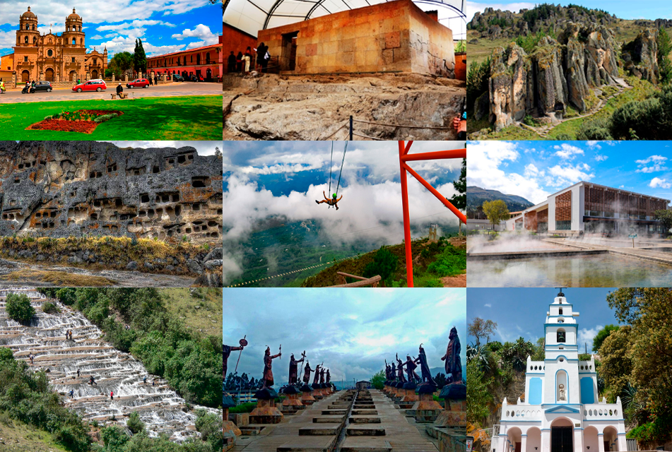

🌞 2 Día/ 🌚 1 Noche
Desde: S/ 250
Ubicación: Cajamarca
Incluye: Boletos de entradas a todos los atractivos turístico, Pozo privado, Paseo en Bote, etc.
Desde: S/ 250
Ubicación: Cajamarca
Incluye: Boletos de entradas a todos los atractivos turístico, Pozo privado, Paseo en Bote, etc.
¡Explora el impresionante bosque de piedras de Cumbemayo! donde disfrutarás de un escenario único que alberga figuras de piedra que representan a animales y personas. Además, conocerás más de la historia de sus petroglifos y su acueducto.
Llegamos a Cajamarca aprox. 1:30 pm.
¡Disfruta de una tarde divertida! Conoce la Hacienda La Colpa, famosa por su “llamada de vacas”.
Llegamos a Cajamarca aprox. 7:30 pm.
Disfruta del poncho verde de Cajamarca y la naturaleza en Granja Porcón.
Regreso a Cajamarca aprox. 2:00 pm.
¡Conoce uno de los cementerios más antiguos del Perú, disfruta del hermoso jardín de las Hortensias y vive una experiencia única en el Fundo Los Alpes!
Regreso a Cajamarca aprox. 7:00 pm.